| step | n | pct_of_total | pct_of_prev | pct_of_attempts |
|---|---|---|---|---|
| Total records | 366 | 100.0 | NA | 100.0 |
| Attempted (≥1 call) | 366 | 100.0 | 100.0 | 100.0 |
| Reached respondent | 215 | 58.7 | 58.7 | 58.7 |
| Consented | 161 | 44.0 | 74.9 | 44.0 |
| Agreed to record | 153 | 41.8 | 95.0 | 41.8 |
| Completed interview | 161 | 44.0 | 105.2 | 44.0 |
| num_calls_num | n | pct |
|---|---|---|
| 1 | 366 | 100 |
| enumerator | Attempts Today | Attempts Overall | Completed Today | Completed Overall | Submissions Today | Submissions Prev Day | Delta (Today - Prev) | refused | rescheduled | no_answer | completion_rate | first_start | last_end | hours_on_clock | surveys_per_hour | discrepancy_flag | discrepancy_reason |
|---|---|---|---|---|---|---|---|---|---|---|---|---|---|---|---|---|---|
| brian_maarifa | 29 | 53 | 13 | 26 | 13 | 13 | 0 | 0 | 15 | 8 | 44.8 | 2026-09-25 10:19:31 | 2026-09-25 16:49:33 | 6.50 | 2.00 | FALSE | NA |
| nicole_maarifa | 28 | 44 | 12 | 21 | 12 | 9 | 3 | 0 | 16 | 7 | 42.9 | 2026-09-25 08:45:57 | 2026-09-25 17:26:14 | 8.67 | 1.38 | FALSE | NA |
| victor_maarifa | 25 | 41 | 12 | 18 | 12 | 6 | 6 | 0 | 11 | 3 | 48.0 | 2026-09-25 11:44:53 | 2026-09-25 17:35:53 | 5.85 | 2.05 | FALSE | NA |
| martin_maarifa | 21 | 42 | 12 | 25 | 12 | 13 | -1 | 0 | 7 | 4 | 57.1 | 2026-09-25 10:27:13 | 2026-09-25 17:17:51 | 6.84 | 1.75 | FALSE | NA |
| christopher_maarifa | 23 | 44 | 11 | 16 | 11 | 5 | 6 | 0 | 11 | 4 | 47.8 | 2026-09-25 10:49:36 | 2026-09-25 16:49:40 | 6.00 | 1.83 | FALSE | NA |
| norbert_maarifa | 28 | 44 | 10 | 16 | 10 | 6 | 4 | 0 | 17 | 7 | 35.7 | 2026-09-25 08:18:47 | 2026-09-25 16:32:03 | 8.22 | 1.22 | FALSE | NA |
| rahma_maarifa | 23 | 55 | 8 | 19 | 8 | 11 | -3 | 0 | 15 | 8 | 34.8 | 2026-09-25 11:18:34 | 2026-09-25 17:04:53 | 5.77 | 1.39 | FALSE | NA |
| lauma | 10 | 10 | 5 | 5 | 5 | 0 | 5 | 0 | 5 | 3 | 50.0 | 2026-09-25 10:09:00 | 2026-09-25 16:34:43 | 6.43 | 0.78 | TRUE | unusually slow (<1 interview/hr) |
| enumerator_id | n_total_events | first_start | last_end | span_min | total_activity_min | median_activity_min | median_gap_min | max_gap_min | n_completed | completion_rate_pct | total_interview_min | median_interview_min | n_attempts | total_attempt_min | median_attempt_min | active_ratio_pct | interviews_per_span_hour | interviews_per_active_hour | minutes_since_last_end |
|---|---|---|---|---|---|---|---|---|---|---|---|---|---|---|---|---|---|---|---|
| brian_maarifa | 29 | 10:19:31 | 16:49:33 | 390.0 | 196.5 | 3.9 | 1.4 | 52.2 | 13 | 44.8 | 159.6 | 11.2 | 16 | 37.0 | 1.6 | 50.4 | 2.00 | 3.97 | -125 |
| nicole_maarifa | 28 | 08:45:57 | 17:26:14 | 520.3 | 387.1 | 6.9 | 1.5 | 22.5 | 12 | 42.9 | 333.3 | 25.4 | 16 | 53.9 | 3.0 | 74.4 | 1.38 | 1.86 | -161 |
| victor_maarifa | 25 | 11:44:53 | 17:35:53 | 351.0 | 243.6 | 8.2 | 1.3 | 30.0 | 12 | 48.0 | 200.1 | 16.2 | 13 | 43.6 | 2.7 | 69.4 | 2.05 | 2.96 | -171 |
| martin_maarifa | 21 | 10:27:13 | 17:17:51 | 410.6 | 296.7 | 11.4 | 2.1 | 48.0 | 12 | 57.1 | 200.0 | 13.3 | 9 | 96.7 | 2.2 | 72.3 | 1.75 | 2.43 | -153 |
| christopher_maarifa | 23 | 10:49:36 | 16:49:40 | 360.1 | 265.2 | 4.1 | 1.3 | 80.0 | 11 | 47.8 | 225.9 | 13.2 | 12 | 39.2 | 1.6 | 73.6 | 1.83 | 2.49 | -125 |
| norbert_maarifa | 28 | 08:18:47 | 16:32:03 | 493.3 | 317.9 | 3.3 | 2.2 | 55.2 | 10 | 35.7 | 275.9 | 28.2 | 18 | 42.0 | 2.3 | 64.4 | 1.22 | 1.89 | -107 |
| rahma_maarifa | 23 | 11:18:34 | 17:04:53 | 346.3 | 174.6 | 2.3 | 1.4 | 65.0 | 8 | 34.8 | 147.2 | 17.0 | 15 | 27.3 | 1.6 | 50.4 | 1.39 | 2.75 | -140 |
| lauma | 10 | 10:09:00 | 16:34:43 | 385.7 | 111.5 | 10.8 | 9.7 | 176.8 | 5 | 50.0 | 91.8 | 17.5 | 5 | 19.8 | 3.8 | 28.9 | 0.78 | 2.69 | -110 |
| id_resolved | enumerator | survey_date | call_status_num | is_completed | next_callback_date | next_callback_time | next_callback_datetime | next_callback_source | days_until_cb | hours_until_cb | cb_urgency | num_calls_num | reschedule_type |
|---|---|---|---|---|---|---|---|---|---|---|---|---|---|
| YM01168 | anonymousUser | 2026-09-23 | 2 | FALSE | 2026-09-23 | 10:00:00 | 2026-09-23 10:00:00 | Rescheduled | -2 | -52.7 | overdue | 1 | NA |
| YN130335_REASSIGN_1 | anonymousUser | 2026-09-23 | 2 | FALSE | 2026-09-23 | 10:30:00 | 2026-09-23 10:30:00 | Rescheduled | -2 | -52.2 | overdue | 1 | NA |
| YM800524 | anonymousUser | 2026-09-23 | 2 | FALSE | 2026-09-23 | 11:00:00 | 2026-09-23 11:00:00 | Rescheduled | -2 | -51.7 | overdue | 1 | NA |
| YN111073 | anonymousUser | 2026-09-23 | 2 | FALSE | 2026-09-23 | 13:00:00 | 2026-09-23 13:00:00 | Rescheduled | -2 | -49.7 | overdue | 1 | NA |
| a62e01491b5b178 | anonymousUser | 2026-09-23 | 2 | FALSE | 2026-09-23 | 13:00:00 | 2026-09-23 13:00:00 | Rescheduled | -2 | -49.7 | overdue | 1 | NA |
| YN130324 | anonymousUser | 2026-09-23 | 2 | FALSE | 2026-09-23 | 14:00:00 | 2026-09-23 14:00:00 | Rescheduled | -2 | -48.7 | overdue | 1 | NA |
| YN08367 | anonymousUser | 2026-09-23 | 2 | FALSE | 2026-09-23 | 14:00:00 | 2026-09-23 14:00:00 | Rescheduled | -2 | -48.7 | overdue | 1 | NA |
| YN130335_REASSIGN_1 | anonymousUser | 2026-09-23 | 2 | FALSE | 2026-09-23 | 15:00:00 | 2026-09-23 15:00:00 | Rescheduled | -2 | -47.7 | overdue | 1 | NA |
| YM121331 | norbert_maarifa | 2026-09-24 | 2 | FALSE | 2026-09-24 | 00:00:00 | 2026-09-24 00:00:00 | Rescheduled | -1 | -38.7 | overdue | 1 | NA |
| YF122064_REASSIGN_1 | victor_maarifa | 2026-09-24 | 1 | TRUE | 2026-09-24 | 00:00:00 | 2026-09-24 00:00:00 | Rescheduled | -1 | -38.7 | overdue | 1 | NA |
| YF122516 | victor_maarifa | 2026-09-24 | 2 | FALSE | 2026-09-24 | 00:00:00 | 2026-09-24 00:00:00 | Rescheduled | -1 | -38.7 | overdue | 1 | NA |
| YM800461 | brian_maarifa | 2026-09-24 | 2 | FALSE | 2026-09-24 | 00:00:00 | 2026-09-24 00:00:00 | Rescheduled | -1 | -38.7 | overdue | 1 | NA |
| YK05229 | victor_maarifa | 2026-09-24 | 2 | FALSE | 2026-09-24 | 00:00:00 | 2026-09-24 00:00:00 | Rescheduled | -1 | -38.7 | overdue | 1 | NA |
| YN04713 | victor_maarifa | 2026-09-24 | 2 | FALSE | 2026-09-24 | 00:00:00 | 2026-09-24 00:00:00 | Rescheduled | -1 | -38.7 | overdue | 1 | NA |
| YK11786 | christopher_maarifa | 2026-09-24 | 2 | FALSE | 2026-09-24 | 00:00:00 | 2026-09-24 00:00:00 | Rescheduled | -1 | -38.7 | overdue | 1 | NA |
| YM10986 | rahma_maarifa | 2026-09-24 | 2 | FALSE | 2026-09-24 | 00:00:00 | 2026-09-24 00:00:00 | Rescheduled | -1 | -38.7 | overdue | 1 | NA |
| YN08982 | rahma_maarifa | 2026-09-24 | 2 | FALSE | 2026-09-24 | 00:00:00 | 2026-09-24 00:00:00 | Rescheduled | -1 | -38.7 | overdue | 1 | NA |
| YN04748 | christopher_maarifa | 2026-09-24 | 2 | FALSE | 2026-09-24 | 00:00:00 | 2026-09-24 00:00:00 | Rescheduled | -1 | -38.7 | overdue | 1 | NA |
| YN01203 | norbert_maarifa | 2026-09-24 | 2 | FALSE | 2026-09-24 | 00:00:00 | 2026-09-24 00:00:00 | Rescheduled | -1 | -38.7 | overdue | 1 | NA |
| YF122046_REASSIGN_1 | victor_maarifa | 2026-09-24 | 2 | FALSE | 2026-09-24 | 00:00:00 | 2026-09-24 00:00:00 | Rescheduled | -1 | -38.7 | overdue | 1 | NA |
| YK122648 | victor_maarifa | 2026-09-24 | 2 | FALSE | 2026-09-24 | 00:00:00 | 2026-09-24 00:00:00 | Rescheduled | -1 | -38.7 | overdue | 1 | NA |
| YM800094 | victor_maarifa | 2026-09-24 | 2 | FALSE | 2026-09-24 | 00:00:00 | 2026-09-24 00:00:00 | Rescheduled | -1 | -38.7 | overdue | 1 | NA |
| YN03475 | martin_maarifa | 2026-09-24 | 2 | FALSE | 2026-09-25 | 00:00:00 | 2026-09-25 00:00:00 | Rescheduled | 0 | -14.7 | today | 1 | NA |
| YN12106 | christopher_maarifa | 2026-09-24 | 2 | FALSE | 2026-09-25 | 00:00:00 | 2026-09-25 00:00:00 | Rescheduled | 0 | -14.7 | today | 1 | NA |
| YN09391 | nicole_maarifa | 2026-09-24 | 2 | FALSE | 2026-09-25 | 00:00:00 | 2026-09-25 00:00:00 | Rescheduled | 0 | -14.7 | today | 1 | NA |
| YK121738 | brian_maarifa | 2026-09-24 | 2 | FALSE | 2026-09-25 | 00:00:00 | 2026-09-25 00:00:00 | Rescheduled | 0 | -14.7 | today | 1 | NA |
| YN03454 | victor_maarifa | 2026-09-25 | 2 | FALSE | 2026-09-25 | 00:00:00 | 2026-09-25 00:00:00 | Rescheduled | 0 | -14.7 | today | 1 | NA |
| YM122903 | victor_maarifa | 2026-09-25 | 2 | FALSE | 2026-09-25 | 00:00:00 | 2026-09-25 00:00:00 | Rescheduled | 0 | -14.7 | today | 1 | NA |
| YK122655 | victor_maarifa | 2026-09-25 | 2 | FALSE | 2026-09-25 | 00:00:00 | 2026-09-25 00:00:00 | Rescheduled | 0 | -14.7 | today | 1 | NA |
| YN03454 | victor_maarifa | 2026-09-25 | 2 | FALSE | 2026-09-25 | 00:00:00 | 2026-09-25 00:00:00 | Rescheduled | 0 | -14.7 | today | 1 | NA |
| YN04412 | victor_maarifa | 2026-09-25 | 2 | FALSE | 2026-09-25 | 00:00:00 | 2026-09-25 00:00:00 | Rescheduled | 0 | -14.7 | today | 1 | NA |
| YM13604 | victor_maarifa | 2026-09-25 | 2 | FALSE | 2026-09-25 | 00:00:00 | 2026-09-25 00:00:00 | Rescheduled | 0 | -14.7 | today | 1 | NA |
| YK122157 | victor_maarifa | 2026-09-25 | 2 | FALSE | 2026-09-25 | 00:00:00 | 2026-09-25 00:00:00 | Rescheduled | 0 | -14.7 | today | 1 | NA |
| YM121360 | norbert_maarifa | 2026-09-25 | 3 | FALSE | 2026-09-25 | 10:30:15 | 2026-09-25 10:30:15 | Case manager | 0 | -4.2 | today | 1 | NA |
| YM12488 | nicole_maarifa | 2026-09-25 | 2 | FALSE | 2026-09-25 | 12:00:00 | 2026-09-25 12:00:00 | Case manager | 0 | -2.7 | today | 1 | NA |
| YK08528 | rahma_maarifa | 2026-09-25 | 2 | FALSE | 2026-09-25 | 14:00:00 | 2026-09-25 14:00:00 | Case manager | 0 | -0.7 | today | 1 | NA |
| YM800759 | rahma_maarifa | 2026-09-25 | 2 | FALSE | 2026-09-25 | 14:00:00 | 2026-09-25 14:00:00 | Case manager | 0 | -0.7 | today | 1 | NA |
| YM800266 | norbert_maarifa | 2026-09-25 | 2 | FALSE | 2026-09-25 | 14:00:00 | 2026-09-25 14:00:00 | Case manager | 0 | -0.7 | today | 1 | NA |
| YM14278 | nicole_maarifa | 2026-09-25 | 2 | FALSE | 2026-09-25 | 15:00:00 | 2026-09-25 15:00:00 | Case manager | 0 | 0.3 | today | 1 | NA |
| YF121770 | norbert_maarifa | 2026-09-25 | 2 | FALSE | 2026-09-25 | 16:00:00 | 2026-09-25 16:00:00 | Case manager | 0 | 1.3 | today | 1 | NA |
| YM13084 | rahma_maarifa | 2026-09-25 | 2 | FALSE | 2026-09-25 | 16:00:00 | 2026-09-25 16:00:00 | Case manager | 0 | 1.3 | today | 1 | NA |
| YK121525 | brian_maarifa | 2026-09-25 | 2 | FALSE | 2026-09-25 | 16:00:00 | 2026-09-25 16:00:00 | Case manager | 0 | 1.3 | today | 1 | NA |
| YF122154 | martin_maarifa | 2026-09-25 | 2 | FALSE | 2026-09-25 | 16:00:00 | 2026-09-25 16:00:00 | Case manager | 0 | 1.3 | today | 1 | NA |
| YF122326 | brian_maarifa | 2026-09-25 | 3 | FALSE | 2026-09-25 | 16:00:04 | 2026-09-25 16:00:04 | Case manager | 0 | 1.3 | today | 1 | NA |
| YN130377 | lauma | 2026-09-25 | 2 | FALSE | 2026-09-25 | 16:10:00 | 2026-09-25 16:10:00 | Case manager | 0 | 1.4 | today | 1 | NA |
| YM121412 | brian_maarifa | 2026-09-25 | 2 | FALSE | 2026-09-25 | 16:30:00 | 2026-09-25 16:30:00 | Case manager | 0 | 1.8 | today | 1 | NA |
| YM800216 | nicole_maarifa | 2026-09-25 | 2 | FALSE | 2026-09-25 | 16:40:00 | 2026-09-25 16:40:00 | Case manager | 0 | 1.9 | today | 1 | NA |
| YN111121 | nicole_maarifa | 2026-09-25 | 2 | FALSE | 2026-09-25 | 17:00:00 | 2026-09-25 17:00:00 | Case manager | 0 | 2.3 | today | 1 | NA |
| YM00555 | christopher_maarifa | 2026-09-25 | 2 | FALSE | 2026-09-25 | 17:00:00 | 2026-09-25 17:00:00 | Case manager | 0 | 2.3 | today | 1 | NA |
| YM13334 | martin_maarifa | 2026-09-25 | 2 | FALSE | 2026-09-25 | 18:00:00 | 2026-09-25 18:00:00 | Case manager | 0 | 3.3 | today | 1 | NA |
| YM04205 | martin_maarifa | 2026-09-25 | 3 | FALSE | 2026-09-25 | 18:00:51 | 2026-09-25 18:00:51 | Case manager | 0 | 3.3 | today | 1 | NA |
| YF800561 | christopher_maarifa | 2026-09-25 | 2 | FALSE | 2026-09-25 | 19:00:00 | 2026-09-25 19:00:00 | Case manager | 0 | 4.3 | today | 1 | NA |
| YN121137 | brian_maarifa | 2026-09-25 | 2 | FALSE | 2026-09-25 | 19:00:00 | 2026-09-25 19:00:00 | Case manager | 0 | 4.3 | today | 1 | NA |
| YN130348 | rahma_maarifa | 2026-09-24 | 2 | FALSE | 2026-09-26 | 00:00:00 | 2026-09-26 00:00:00 | Rescheduled | 1 | 9.3 | tomorrow | 1 | NA |
| YF122537 | nicole_maarifa | 2026-09-25 | 6 | FALSE | 2026-09-26 | 08:00:27 | 2026-09-26 08:00:27 | Case manager | 1 | 17.3 | tomorrow | 1 | 1 |
| YM122576 | nicole_maarifa | 2026-09-25 | 6 | FALSE | 2026-09-26 | 09:00:20 | 2026-09-26 09:00:20 | Case manager | 1 | 18.3 | tomorrow | 1 | 1 |
| YM121318 | martin_maarifa | 2026-09-25 | 3 | FALSE | 2026-09-26 | 09:00:38 | 2026-09-26 09:00:38 | Case manager | 1 | 18.3 | tomorrow | 1 | NA |
| YM800578 | christopher_maarifa | 2026-09-25 | 6 | FALSE | 2026-09-26 | 10:20:41 | 2026-09-26 10:20:41 | Case manager | 1 | 19.6 | tomorrow | 1 | 1 |
| YM08916 | nicole_maarifa | 2026-09-25 | 2 | FALSE | 2026-09-26 | 16:00:00 | 2026-09-26 16:00:00 | Case manager | 1 | 25.3 | tomorrow | 1 | NA |
| YK122912 | norbert_maarifa | 2026-09-25 | 2 | FALSE | 2026-09-27 | 14:00:00 | 2026-09-27 14:00:00 | Case manager | 2 | 47.3 | this_week | 1 | NA |
| YK10778 | rahma_maarifa | 2026-09-25 | 2 | FALSE | 2026-09-28 | 15:00:00 | 2026-09-28 15:00:00 | Case manager | 3 | 72.3 | this_week | 1 | NA |
| YN111036 | rahma_maarifa | 2026-09-25 | 6 | FALSE | 2026-09-28 | 20:30:39 | 2026-09-28 20:30:39 | Case manager | 3 | 77.8 | this_week | 1 | 1 |
No data.
No data.
| arm | n | pct |
|---|---|---|
| full | 205 | 56.0 |
| top_up | 139 | 38.0 |
| resume | 19 | 5.2 |
| Unknown | 3 | 0.8 |
| arm | n | mean_probability_job | mean_rec_intention | mean_rec_valuation | mean_belief_mentoring | median_duration | consent_rate |
|---|---|---|---|---|---|---|---|
| full | 76 | 62.16 | 67.65 | 7.26 | 48.65 | 23.0 | 100.0 |
| resume | 8 | NA | 75.00 | 7.67 | 31.25 | 18.5 | 100.0 |
| top_up | 74 | NA | NA | NA | NA | 13.2 | 98.6 |
| enumerator | completed_n | n_consented | n_refused | consent_rate | n_recording | record_rate |
|---|---|---|---|---|---|---|
| anonymousUser | 15 | 15 | 0 | 100.0 | 15 | 100.0 |
| brian_maarifa | 26 | 26 | 0 | 100.0 | 26 | 100.0 |
| lauma | 5 | 5 | 0 | 100.0 | 5 | 100.0 |
| martin_maarifa | 25 | 25 | 0 | 100.0 | 24 | 96.0 |
| nicole_maarifa | 21 | 21 | 0 | 100.0 | 21 | 100.0 |
| norbert_maarifa | 16 | 16 | 0 | 100.0 | 14 | 87.5 |
| rahma_maarifa | 19 | 19 | 0 | 100.0 | 19 | 100.0 |
| victor_maarifa | 18 | 17 | 0 | 100.0 | 14 | 82.4 |
| christopher_maarifa | 16 | 15 | 1 | 93.8 | 15 | 100.0 |
| variable | code | value_en | value_sw | value_bilingual | n | pct |
|---|---|---|---|---|---|---|
| call_status | 1 | Completed | Imekamilika | Completed / Imekamilika | 161 | 44.0 |
| call_status | 2 | Answered, but not completed | Imejibiwa, lakini haijakamilika | Answered, but not completed / Imejibiwa, lakini haijakamilika | 54 | 14.8 |
| call_status | 3 | Answered, but not by the respondent | Imejibiwa, lakini si na mjibuji | Answered, but not by the respondent / Imejibiwa, lakini si na mjibuji | 14 | 3.8 |
| call_status | 4 | No answer | Hakuna jibu | No answer / Hakuna jibu | 71 | 19.4 |
| call_status | 6 | Line Busy | Nambari inatumika | Line Busy / Nambari inatumika | 19 | 5.2 |
| call_status | 7 | Phone off | Simu imezimwa | Phone off / Simu imezimwa | 37 | 10.1 |
| call_status | 8 | Number does not connect (temporarily out of service, not a valid number, permanently disconnected, or call dropped or out of coverage) | Nambari haiunganishi (haifanyi kazi kwa muda, si nambari sahihi, imekatishwa kabisa, simu imekatika, au haina mtandao) | Number does not connect (temporarily out of service, not a valid number, permanently disconnected, or call dropped or out of coverage) / Nambari haiunganishi (haifanyi kazi kwa muda, si nambari sahihi, imekatishwa kabisa, simu imekatika, au haina mtandao) | 6 | 1.6 |
| call_status | 9 | Wrong number | Nambari mbaya | Wrong number / Nambari mbaya | 4 | 1.1 |
| consent | 0 | No | Hapana | No / Hapana | 2 | 1.2 |
| consent | 1 | Yes | Ndiyo | Yes / Ndiyo | 159 | 98.8 |
| consent_record | 0 | No | Hapana | No / Hapana | 6 | 3.8 |
| consent_record | 1 | Yes | Ndiyo | Yes / Ndiyo | 153 | 96.2 |
| ai_willing | 1 | Yes | Ndiyo | Yes / Ndiyo | 16 | 88.9 |
| ai_willing | 2 | Maybe, later | Labda, baadaye | Maybe, later / Labda, baadaye | 2 | 11.1 |
| rec_useful | -98 | -98 | -98 | -98 | 1 | 0.7 |
| rec_useful | 1 | 1 | 1 | 1 | 3 | 2.0 |
| rec_useful | 2 | 2 | 2 | 2 | 5 | 3.4 |
| rec_useful | 3 | 3 | 3 | 3 | 9 | 6.0 |
| rec_useful | 4 | 4 | 4 | 4 | 91 | 61.1 |
| rec_useful | 5 | 5 | 5 | 5 | 40 | 26.8 |
| rec_pushed | -98 | -98 | -98 | -98 | 1 | 0.7 |
| rec_pushed | 1 | 1 | 1 | 1 | 36 | 24.2 |
| rec_pushed | 2 | 2 | 2 | 2 | 79 | 53.0 |
| rec_pushed | 3 | 3 | 3 | 3 | 4 | 2.7 |
| rec_pushed | 4 | 4 | 4 | 4 | 23 | 15.4 |
| rec_pushed | 5 | 5 | 5 | 5 | 6 | 4.0 |
| reschedule_type | 1 | Choose a date and time | Chagua tarehe na saa | Choose a date and time / Chagua tarehe na saa | 4 | 66.7 |
| reschedule_type | 2 | Reschedule for X hours from now | Panga tena kwa saa X kuanzia sasa | Reschedule for X hours from now / Panga tena kwa saa X kuanzia sasa | 2 | 33.3 |
| phone_response | 1 | Answered the phone, correct respondent | Alijibu simu, mjibu sahihi | Answered the phone, correct respondent / Alijibu simu, mjibu sahihi | 215 | 58.7 |
| phone_response | 2 | Answered, but not by the respondent | Alijibu, lakini si kwa mjibu | Answered, but not by the respondent / Alijibu, lakini si kwa mjibu | 17 | 4.6 |
| phone_response | 3 | No answer | Hakuna jibu | No answer / Hakuna jibu | 118 | 32.2 |
| phone_response | 4 | Number does not work (does not ring/connect to a phone) | Nambari haifanyi kazi (haipigi/haiunganishi na simu) | Number does not work (does not ring/connect to a phone) / Nambari haifanyi kazi (haipigi/haiunganishi na simu) | 10 | 2.7 |
| phone_response | 5 | code_5 | code_5 | code_5 | 6 | 1.6 |
| ai_help | 1 | Send the login link again | Nitumie tena kiungo cha kuingia | Send the login link again / Nitumie tena kiungo cha kuingia | 2 | 25.0 |
| ai_help | 2 | A starter data bundle | Bando la kuanzia la intaneti | A starter data bundle / Bando la kuanzia la intaneti | 1 | 12.5 |
| ai_help | 4 | Someone to explain how to use it | Mtu wa kunielezea jinsi ya kuitumia | Someone to explain how to use it / Mtu wa kunielezea jinsi ya kuitumia | 4 | 50.0 |
| ai_help | 888 | Other (specify) | Nyingine (taja) | Other (specify) / Nyingine (taja) | 1 | 12.5 |
| enumerator | attempts | completed | rescheduled | refused | completion_rate | consented | consent_rate_comp | median_duration_min | median_attempts | n_short | n_dup_id | n_outliers | n_incomplete | n_overdue_cb | total_flags | flag_rate_pct | mean_completeness | completed_today | attempts_today |
|---|---|---|---|---|---|---|---|---|---|---|---|---|---|---|---|---|---|---|---|
| anonymousUser | 32 | 15 | 16 | 0 | 46.9 | 15 | 46.9 | 30.5 | 1 | 0 | 4 | 7 | 9 | 8 | 21 | 65.6 | 64.2 | 0 | 0 |
| victor_maarifa | 41 | 18 | 21 | 0 | 43.9 | 17 | 42.5 | 16.4 | 1 | 0 | 2 | 7 | 14 | 6 | 23 | 56.1 | 64.1 | 12 | 25 |
| lauma | 10 | 5 | 5 | 0 | 50.0 | 5 | 50.0 | 17.5 | 1 | 0 | 0 | 4 | 5 | 0 | 5 | 50.0 | 63.6 | 5 | 10 |
| martin_maarifa | 42 | 25 | 14 | 0 | 59.5 | 25 | 59.5 | 13.3 | 1 | 0 | 0 | 11 | 11 | 0 | 19 | 45.2 | 77.4 | 12 | 21 |
| brian_maarifa | 53 | 26 | 25 | 0 | 49.1 | 26 | 49.1 | 13.1 | 1 | 0 | 0 | 8 | 14 | 1 | 21 | 39.6 | 76.6 | 13 | 29 |
| christopher_maarifa | 44 | 16 | 22 | 0 | 36.4 | 15 | 34.1 | 15.6 | 1 | 1 | 0 | 9 | 10 | 2 | 16 | 36.4 | 70.4 | 11 | 23 |
| nicole_maarifa | 44 | 21 | 21 | 0 | 47.7 | 21 | 47.7 | 26.1 | 1 | 0 | 0 | 8 | 5 | 0 | 11 | 25.0 | 84.8 | 12 | 28 |
| rahma_maarifa | 55 | 19 | 31 | 0 | 34.5 | 19 | 34.5 | 16.3 | 1 | 0 | 0 | 6 | 8 | 2 | 13 | 23.6 | 78.9 | 8 | 23 |
| norbert_maarifa | 44 | 16 | 25 | 0 | 36.4 | 16 | 36.4 | 27.0 | 1 | 0 | 0 | 1 | 5 | 2 | 8 | 18.2 | 80.7 | 10 | 28 |
| jasmin.baier@bsg.ox.ac.uk | 1 | 0 | 1 | 0 | 0.0 | 0 | 0.0 | NA | 1 | 0 | 0 | 0 | 0 | 0 | 0 | 0.0 | NA | 0 | 0 |
| id_resolved | enumerator | survey_date | call_status_num | is_completed | duration_min | num_calls_num | arm | days_until_cb | cb_urgency | flag_reasons |
|---|---|---|---|---|---|---|---|---|---|---|
| YN01290 | anonymousUser | 2026-09-22 | 1 | TRUE | 225.4833333 | 1 | Unknown | NA | none | Survey type unknown | Multiple COMPLETED surveys for same ID | Incomplete (<70%) | Outlier: duration | Outlier: best_phone | Outlier: phone_1 | Outlier: phone_3 | Outlier: phone_call_1 | Outlier: phonenumber_called |
| YN01290 | anonymousUser | 2026-09-22 | 1 | TRUE | 47.2833333 | 1 | Unknown | NA | none | Survey type unknown | Multiple COMPLETED surveys for same ID | Incomplete (<70%) | Outlier: jobsearch_7days_hours | Outlier: best_phone | Outlier: phone_1 | Outlier: phone_3 | Outlier: phone_call_1 | Outlier: phonenumber_called |
| YN01290 | anonymousUser | 2026-09-22 | 1 | TRUE | 18.7833333 | 1 | Unknown | NA | none | Survey type unknown | Multiple COMPLETED surveys for same ID | Incomplete (<70%) | Outlier: best_phone | Outlier: phone_1 | Outlier: phone_3 | Outlier: phone_call_1 | Outlier: phonenumber_called |
| YN01290 | anonymousUser | 2026-09-23 | 4 | FALSE | 28.9166667 | 1 | full | NA | none | Multiple COMPLETED surveys for same ID |
| YM800524 | anonymousUser | 2026-09-23 | 2 | FALSE | 7.1166667 | 1 | top_up | -2 | overdue | Reschedule overdue | Reschedule overdue |
| YM01168 | anonymousUser | 2026-09-23 | 2 | FALSE | 19.0333333 | 1 | resume | -2 | overdue | Reschedule overdue | Reschedule overdue |
| YN130324 | anonymousUser | 2026-09-23 | 2 | FALSE | 14.7666667 | 1 | resume | -2 | overdue | Reschedule overdue | Reschedule overdue |
| YN130335_REASSIGN_1 | anonymousUser | 2026-09-23 | 2 | FALSE | 3.5666667 | 1 | resume | -2 | overdue | Reschedule overdue | Reschedule overdue |
| YM07966 | anonymousUser | 2026-09-23 | 1 | TRUE | 39.5000000 | 1 | resume | NA | none | Incomplete (<70%) |
| YM121391 | anonymousUser | 2026-09-23 | 1 | TRUE | 41.6666667 | 1 | resume | NA | none | Incomplete (<70%) |
| YF122682 | anonymousUser | 2026-09-23 | 1 | TRUE | 30.4833333 | 1 | top_up | NA | none | Incomplete (<70%) |
| UNREG_0113915622 | anonymousUser | 2026-09-23 | 1 | TRUE | 10.8000000 | 1 | top_up | NA | none | Incomplete (<70%) | Outlier: best_phone | Outlier: phone_1 | Outlier: phone_call_1 | Outlier: phonenumber_called |
| YN130372 | anonymousUser | 2026-09-23 | 1 | TRUE | 33.6000000 | 1 | full | NA | none | Outlier: phone_2 | Outlier: phone_3 |
| YK05097 | anonymousUser | 2026-09-23 | 1 | TRUE | 30.5833333 | 1 | resume | NA | none | Outlier: phone_2 |
| YN111073 | anonymousUser | 2026-09-23 | 2 | FALSE | 58.8666667 | 1 | top_up | -2 | overdue | Reschedule overdue | Reschedule overdue |
| YM800132 | anonymousUser | 2026-09-23 | 1 | TRUE | 37.3000000 | 1 | full | NA | none | Outlier: best_phone | Outlier: phone_1 | Outlier: phone_call_1 | Outlier: phonenumber_called |
| YN130335_REASSIGN_1 | anonymousUser | 2026-09-23 | 2 | FALSE | 0.8333333 | 1 | resume | -2 | overdue | Reschedule overdue | Reschedule overdue |
| YK121438 | anonymousUser | 2026-09-23 | 1 | TRUE | 16.4000000 | 1 | top_up | NA | none | Incomplete (<70%) |
| UNREG_0746762339 | anonymousUser | 2026-09-23 | 1 | TRUE | 19.9666667 | 1 | resume | NA | none | Incomplete (<70%) |
| a62e01491b5b178 | anonymousUser | 2026-09-23 | 2 | FALSE | 6.1833333 | 1 | top_up | -2 | overdue | Reschedule overdue | Reschedule overdue |
| YN08367 | anonymousUser | 2026-09-23 | 2 | FALSE | 12.8500000 | 1 | full | -2 | overdue | Reschedule overdue | Reschedule overdue |
| YK03006 | brian_maarifa | 2026-09-24 | 1 | TRUE | 12.5500000 | 1 | top_up | NA | none | Incomplete (<70%) |
| YM800461 | brian_maarifa | 2026-09-24 | 2 | FALSE | 4.1333333 | 1 | full | -1 | overdue | Reschedule overdue | Reschedule overdue |
| YN04246 | brian_maarifa | 2026-09-24 | 1 | TRUE | 21.0000000 | 1 | full | NA | none | Outlier: best_phone | Outlier: phone_1 | Outlier: phone_call_1 | Outlier: phonenumber_called |
| YF12745 | brian_maarifa | 2026-09-24 | 1 | TRUE | 12.9000000 | 1 | top_up | NA | none | Incomplete (<70%) |
| YK121420 | brian_maarifa | 2026-09-24 | 1 | TRUE | 12.6166667 | 1 | top_up | NA | none | Incomplete (<70%) |
| YF10815 | brian_maarifa | 2026-09-24 | 1 | TRUE | 12.3833333 | 1 | top_up | NA | none | Incomplete (<70%) |
| YM800461 | brian_maarifa | 2026-09-24 | 1 | TRUE | 15.1666667 | 1 | full | NA | none | Outlier: best_phone | Outlier: phone_1 | Outlier: phone_call_1 | Outlier: phonenumber_called |
| YN121220 | brian_maarifa | 2026-09-24 | 1 | TRUE | 18.4000000 | 1 | full | NA | none | Outlier: phone_2 |
| YN01292 | brian_maarifa | 2026-09-24 | 1 | TRUE | 9.7666667 | 1 | top_up | NA | none | Incomplete (<70%) | Outlier: phone_2 |
| YF122085 | brian_maarifa | 2026-09-24 | 1 | TRUE | 21.7500000 | 1 | full | NA | none | Outlier: best_phone | Outlier: phone_1 | Outlier: phone_call_1 | Outlier: phonenumber_called |
| YN01444 | brian_maarifa | 2026-09-24 | 1 | TRUE | 13.3333333 | 1 | top_up | NA | none | Incomplete (<70%) |
| YM11133 | brian_maarifa | 2026-09-24 | 1 | TRUE | 15.4666667 | 1 | top_up | NA | none | Incomplete (<70%) |
| YF121503 | brian_maarifa | 2026-09-25 | 1 | TRUE | 7.0000000 | 1 | top_up | NA | none | Incomplete (<70%) | Outlier: best_phone | Outlier: phone_1 | Outlier: phone_2 | Outlier: phone_call_1 | Outlier: phonenumber_called |
| YK05620 | brian_maarifa | 2026-09-25 | 1 | TRUE | 17.1666667 | 1 | full | NA | none | Outlier: phone_3 |
| YN00405 | brian_maarifa | 2026-09-25 | 1 | TRUE | 9.3333333 | 1 | top_up | NA | none | Incomplete (<70%) |
| YM06719 | brian_maarifa | 2026-09-25 | 1 | TRUE | 9.1000000 | 1 | top_up | NA | none | Incomplete (<70%) |
| YF121472 | brian_maarifa | 2026-09-25 | 1 | TRUE | 11.1666667 | 1 | top_up | NA | none | Incomplete (<70%) |
| YN06076 | brian_maarifa | 2026-09-25 | 1 | TRUE | 18.0333333 | 1 | full | NA | none | Outlier: phone_2 |
| YF122173 | brian_maarifa | 2026-09-25 | 1 | TRUE | 7.0666667 | 1 | top_up | NA | none | Incomplete (<70%) |
| YN06625 | brian_maarifa | 2026-09-25 | 1 | TRUE | 10.4833333 | 1 | top_up | NA | none | Incomplete (<70%) |
| YN05398 | brian_maarifa | 2026-09-25 | 1 | TRUE | 7.4666667 | 1 | top_up | NA | none | Incomplete (<70%) |
| YK11786 | christopher_maarifa | 2026-09-24 | 2 | FALSE | 3.3333333 | 1 | full | -1 | overdue | Reschedule overdue | Reschedule overdue |
| YM800182 | christopher_maarifa | 2026-09-24 | 1 | TRUE | 19.2833333 | 1 | full | NA | none | Outlier: best_phone | Outlier: phone_1 | Outlier: phone_2 | Outlier: phone_call_1 | Outlier: phonenumber_called |
| YN03148 | christopher_maarifa | 2026-09-24 | 1 | TRUE | 13.0333333 | 1 | top_up | NA | none | Incomplete (<70%) | Outlier: search_apply |
| YN06793 | christopher_maarifa | 2026-09-24 | 1 | TRUE | 17.7833333 | 1 | top_up | NA | none | Incomplete (<70%) | Outlier: emotion_regulation_attention |
| YM800748 | christopher_maarifa | 2026-09-24 | 1 | TRUE | 23.1500000 | 1 | top_up | NA | none | Incomplete (<70%) |
| YN04748 | christopher_maarifa | 2026-09-24 | 2 | FALSE | 6.6166667 | 1 | top_up | -1 | overdue | Reschedule overdue | Reschedule overdue |
| YK04303 | christopher_maarifa | 2026-09-24 | 1 | TRUE | 24.1000000 | 1 | full | NA | none | Outlier: phone_2 |
| YN130389 | christopher_maarifa | 2026-09-25 | 1 | TRUE | 13.1833333 | 1 | top_up | NA | none | Incomplete (<70%) | Outlier: phone_2 |
| YM01102 | christopher_maarifa | 2026-09-25 | 1 | TRUE | 26.9166667 | 1 | full | NA | none | Outlier: phone_2 | Outlier: phone_3 |
| YF122061 | christopher_maarifa | 2026-09-25 | 1 | TRUE | 13.3166667 | 1 | top_up | NA | none | Incomplete (<70%) |
| YM121915 | christopher_maarifa | 2026-09-25 | 1 | TRUE | 8.9333333 | 1 | top_up | NA | none | Incomplete (<70%) |
| YF11929 | christopher_maarifa | 2026-09-25 | 1 | TRUE | 10.5833333 | 1 | top_up | NA | none | Incomplete (<70%) |
| YM09688 | christopher_maarifa | 2026-09-25 | 1 | TRUE | 17.9833333 | 1 | full | NA | none | Outlier: belief_earnings_formal_ownsector | Outlier: eff_belief_earnings_formal_ownsector |
| YM11297 | christopher_maarifa | 2026-09-25 | 1 | TRUE | 10.7000000 | 1 | top_up | NA | none | Incomplete (<70%) |
| YM00936 | christopher_maarifa | 2026-09-25 | 1 | TRUE | 10.4166667 | 1 | top_up | NA | none | Incomplete (<70%) | Outlier: best_phone | Outlier: phone_1 | Outlier: phone_call_1 | Outlier: phonenumber_called |
| YK121682 | christopher_maarifa | 2026-09-25 | 1 | TRUE | 4.1000000 | 1 | top_up | NA | none | Short (<5 min) | Incomplete (<70%) | Outlier: phone_2 |
| YN130239 | lauma | 2026-09-25 | 1 | TRUE | 26.1333333 | 1 | top_up | NA | none | Incomplete (<70%) | Outlier: phone_3 |
| YK04955 | lauma | 2026-09-25 | 1 | TRUE | 19.7833333 | 1 | top_up | NA | none | Incomplete (<70%) |
| YM13697 | lauma | 2026-09-25 | 1 | TRUE | 17.5000000 | 1 | top_up | NA | none | Incomplete (<70%) | Outlier: best_phone | Outlier: phone_1 | Outlier: phone_call_1 | Outlier: phonenumber_called |
| YF00972 | lauma | 2026-09-25 | 1 | TRUE | 14.8166667 | 1 | top_up | NA | none | Incomplete (<70%) | Outlier: best_phone | Outlier: phone_1 | Outlier: phone_call_1 | Outlier: phonenumber_called |
| YN130377 | lauma | 2026-09-25 | 1 | TRUE | 13.5333333 | 1 | top_up | NA | none | Incomplete (<70%) | Outlier: phone_2 |
| YM800770 | martin_maarifa | 2026-09-24 | 1 | TRUE | 30.6833333 | 1 | full | NA | none | Outlier: phone_2 |
| YK122756 | martin_maarifa | 2026-09-24 | 1 | TRUE | 17.1166667 | 1 | full | NA | none | Outlier: best_phone | Outlier: phone_1 | Outlier: phone_2 | Outlier: phone_call_1 | Outlier: phonenumber_called |
| YN06775 | martin_maarifa | 2026-09-24 | 1 | TRUE | 14.2500000 | 1 | top_up | NA | none | Incomplete (<70%) |
| YM121904 | martin_maarifa | 2026-09-24 | 1 | TRUE | 13.1666667 | 1 | top_up | NA | none | Incomplete (<70%) |
| YK122139 | martin_maarifa | 2026-09-24 | 1 | TRUE | 9.5666667 | 1 | top_up | NA | none | Incomplete (<70%) |
| YN130233 | martin_maarifa | 2026-09-24 | 1 | TRUE | 10.5500000 | 1 | resume | NA | none | Incomplete (<70%) |
| YK122494 | martin_maarifa | 2026-09-24 | 1 | TRUE | 11.7333333 | 1 | full | NA | none | Outlier: best_phone | Outlier: phone_1 | Outlier: phone_call_1 | Outlier: phonenumber_called |
| YN01238 | martin_maarifa | 2026-09-24 | 1 | TRUE | 8.5333333 | 1 | top_up | NA | none | Incomplete (<70%) |
| YN03084 | martin_maarifa | 2026-09-24 | 1 | TRUE | 17.6833333 | 1 | full | NA | none | Outlier: phone_2 |
| YK03610 | martin_maarifa | 2026-09-24 | 1 | TRUE | 8.9666667 | 1 | top_up | NA | none | Incomplete (<70%) |
| YN03143 | martin_maarifa | 2026-09-24 | 1 | TRUE | 16.3833333 | 1 | top_up | NA | none | Incomplete (<70%) | Outlier: phone_2 |
| YN02729 | martin_maarifa | 2026-09-25 | 1 | TRUE | 11.4000000 | 1 | top_up | NA | none | Incomplete (<70%) | Outlier: best_phone | Outlier: phone_1 | Outlier: phone_call_1 | Outlier: phonenumber_called |
| YF122172 | martin_maarifa | 2026-09-25 | 1 | TRUE | 24.5666667 | 1 | full | NA | none | Outlier: best_phone | Outlier: phone_1 | Outlier: phone_call_1 | Outlier: phonenumber_called |
| YN10226 | martin_maarifa | 2026-09-25 | 1 | TRUE | 12.6666667 | 1 | top_up | NA | none | Incomplete (<70%) | Outlier: phone_2 |
| YM15212 | martin_maarifa | 2026-09-25 | 1 | TRUE | 11.7833333 | 1 | top_up | NA | none | Incomplete (<70%) |
| YM01924 | martin_maarifa | 2026-09-25 | 1 | TRUE | 16.7666667 | 1 | full | NA | none | Outlier: best_phone | Outlier: phone_1 | Outlier: phone_call_1 | Outlier: phonenumber_called |
| UNREG_0745800681 | martin_maarifa | 2026-09-25 | 1 | TRUE | 16.6833333 | 1 | top_up | NA | none | Incomplete (<70%) |
| YM800035 | martin_maarifa | 2026-09-25 | 1 | TRUE | 13.7500000 | 1 | full | NA | none | Outlier: phone_3 |
| YF122340 | martin_maarifa | 2026-09-25 | 1 | TRUE | 10.0500000 | 1 | full | NA | none | Outlier: best_phone | Outlier: phone_1 | Outlier: phone_call_1 | Outlier: phonenumber_called |
| YF122672 | nicole_maarifa | 2026-09-24 | 1 | TRUE | 31.1166667 | 1 | full | NA | none | Outlier: emotion_regulation_impuslivity |
| YN121131 | nicole_maarifa | 2026-09-24 | 1 | TRUE | 26.0666667 | 1 | top_up | NA | none | Incomplete (<70%) |
| YN06489 | nicole_maarifa | 2026-09-24 | 1 | TRUE | 23.9000000 | 1 | full | NA | none | Outlier: phone_3 |
| YM121371 | nicole_maarifa | 2026-09-25 | 1 | TRUE | 32.4166667 | 1 | full | NA | none | Outlier: phone_2 |
| YM130646 | nicole_maarifa | 2026-09-25 | 1 | TRUE | 60.6500000 | 1 | top_up | NA | none | Incomplete (<70%) | Outlier: phone_3 |
| YN11198 | nicole_maarifa | 2026-09-25 | 1 | TRUE | 18.9333333 | 1 | full | NA | none | Outlier: phone_2 |
| YM800442 | nicole_maarifa | 2026-09-25 | 1 | TRUE | 53.8333333 | 1 | full | NA | none | Outlier: phone_2 |
| YF06723 | nicole_maarifa | 2026-09-25 | 1 | TRUE | 11.3000000 | 1 | top_up | NA | none | Incomplete (<70%) |
| YM11606 | nicole_maarifa | 2026-09-25 | 1 | TRUE | 14.2833333 | 1 | top_up | NA | none | Incomplete (<70%) |
| YN04751 | nicole_maarifa | 2026-09-25 | 1 | TRUE | 10.8833333 | 1 | top_up | NA | none | Incomplete (<70%) | Outlier: best_phone | Outlier: phone_1 | Outlier: phone_call_1 | Outlier: phonenumber_called |
| YN121153 | nicole_maarifa | 2026-09-25 | 1 | TRUE | 22.3666667 | 1 | full | NA | none | Outlier: phone_2 |
| YM121331 | norbert_maarifa | 2026-09-24 | 2 | FALSE | 5.3666667 | 1 | full | -1 | overdue | Reschedule overdue | Reschedule overdue |
| YN130335_REASSIGN_1 | norbert_maarifa | 2026-09-24 | 1 | TRUE | 10.9166667 | 1 | resume | NA | none | Incomplete (<70%) |
| YM11740 | norbert_maarifa | 2026-09-24 | 1 | TRUE | 42.9166667 | 1 | full | NA | none | Outlier: emotion_regulation_attention |
| YN01203 | norbert_maarifa | 2026-09-24 | 2 | FALSE | 2.6000000 | 1 | full | -1 | overdue | Reschedule overdue | Reschedule overdue |
| YF122168 | norbert_maarifa | 2026-09-25 | 1 | TRUE | 17.1166667 | 1 | top_up | NA | none | Incomplete (<70%) |
| YM121360 | norbert_maarifa | 2026-09-25 | 1 | TRUE | 17.2333333 | 1 | top_up | NA | none | Incomplete (<70%) |
| YM800266 | norbert_maarifa | 2026-09-25 | 1 | TRUE | 10.7500000 | 1 | top_up | NA | none | Incomplete (<70%) |
| YF122029 | norbert_maarifa | 2026-09-25 | 1 | TRUE | 9.8833333 | 1 | top_up | NA | none | Incomplete (<70%) |
| YM10980 | rahma_maarifa | 2026-09-24 | 1 | TRUE | 55.9833333 | 1 | top_up | NA | none | Incomplete (<70%) |
| YN121270 | rahma_maarifa | 2026-09-24 | 1 | TRUE | 11.0166667 | 1 | top_up | NA | none | Incomplete (<70%) |
| YK121447 | rahma_maarifa | 2026-09-24 | 1 | TRUE | 7.3666667 | 1 | top_up | NA | none | Incomplete (<70%) | Outlier: best_phone | Outlier: phone_1 | Outlier: phone_call_1 | Outlier: phonenumber_called |
| YM10986 | rahma_maarifa | 2026-09-24 | 2 | FALSE | 2.1666667 | 1 | top_up | -1 | overdue | Reschedule overdue | Reschedule overdue |
| YM121338 | rahma_maarifa | 2026-09-24 | 1 | TRUE | 10.8666667 | 1 | top_up | NA | none | Incomplete (<70%) | Outlier: best_phone | Outlier: phone_1 | Outlier: phone_call_1 | Outlier: phonenumber_called |
| YN08982 | rahma_maarifa | 2026-09-24 | 2 | FALSE | 2.5000000 | 1 | full | -1 | overdue | Reschedule overdue | Reschedule overdue |
| YC11586 | rahma_maarifa | 2026-09-24 | 1 | TRUE | 12.7166667 | 1 | resume | NA | none | Incomplete (<70%) | Outlier: best_phone | Outlier: phone_1 | Outlier: phone_call_1 | Outlier: phonenumber_called |
| YK13806 | rahma_maarifa | 2026-09-24 | 1 | TRUE | 8.4166667 | 1 | top_up | NA | none | Incomplete (<70%) |
| YF12939 | rahma_maarifa | 2026-09-24 | 1 | TRUE | 16.8000000 | 1 | full | NA | none | Outlier: best_phone | Outlier: phone_1 | Outlier: phone_3 | Outlier: phone_call_1 | Outlier: phonenumber_called |
| YK08528 | rahma_maarifa | 2026-09-25 | 1 | TRUE | 8.1333333 | 1 | top_up | NA | none | Incomplete (<70%) |
| YN03220 | rahma_maarifa | 2026-09-25 | 1 | TRUE | 16.0833333 | 1 | full | NA | none | Outlier: best_phone | Outlier: phone_1 | Outlier: phone_call_1 | Outlier: phonenumber_called |
| YN06951 | rahma_maarifa | 2026-09-25 | 1 | TRUE | 10.0166667 | 1 | top_up | NA | none | Incomplete (<70%) |
| YK10778 | rahma_maarifa | 2026-09-25 | 1 | TRUE | 25.7833333 | 1 | full | NA | none | Outlier: phone_2 |
| YF122064_REASSIGN_1 | victor_maarifa | 2026-09-24 | 1 | TRUE | 15.4500000 | 1 | full | -1 | overdue | Critical missing: consent (completed survey) | Multiple COMPLETED surveys for same ID | Incomplete (<70%) |
| YF122064_REASSIGN_1 | victor_maarifa | 2026-09-24 | 1 | TRUE | 42.0000000 | 1 | full | NA | none | Multiple COMPLETED surveys for same ID |
| YF122516 | victor_maarifa | 2026-09-24 | 2 | FALSE | 4.5333333 | 1 | full | -1 | overdue | Reschedule overdue | Reschedule overdue |
| YK05229 | victor_maarifa | 2026-09-24 | 2 | FALSE | 4.3333333 | 1 | full | -1 | overdue | Reschedule overdue | Reschedule overdue |
| YN121154 | victor_maarifa | 2026-09-24 | 1 | TRUE | 28.9166667 | 1 | full | NA | none | Outlier: best_phone | Outlier: phone_1 | Outlier: phone_2 | Outlier: phone_call_1 | Outlier: phonenumber_called |
| YN04039 | victor_maarifa | 2026-09-24 | 1 | TRUE | 23.4000000 | 1 | top_up | NA | none | Incomplete (<70%) |
| YN04713 | victor_maarifa | 2026-09-24 | 2 | FALSE | 7.2166667 | 1 | full | -1 | overdue | Reschedule overdue | Reschedule overdue |
| YM04007 | victor_maarifa | 2026-09-24 | 1 | TRUE | 13.8833333 | 1 | top_up | NA | none | Incomplete (<70%) |
| YF122046_REASSIGN_1 | victor_maarifa | 2026-09-24 | 2 | FALSE | 2.3333333 | 1 | full | -1 | overdue | Reschedule overdue | Reschedule overdue |
| YK122648 | victor_maarifa | 2026-09-24 | 2 | FALSE | 2.9833333 | 1 | full | -1 | overdue | Reschedule overdue | Reschedule overdue |
| YN04713 | victor_maarifa | 2026-09-24 | 1 | TRUE | 33.5833333 | 1 | full | NA | none | Outlier: best_phone | Outlier: phone_1 | Outlier: phone_call_1 | Outlier: phonenumber_called |
| YM800094 | victor_maarifa | 2026-09-24 | 2 | FALSE | 50.3166667 | 1 | top_up | -1 | overdue | Reschedule overdue | Reschedule overdue |
| YM00334 | victor_maarifa | 2026-09-25 | 1 | TRUE | 17.0666667 | 1 | resume | NA | none | Incomplete (<70%) | Outlier: best_phone | Outlier: phone_1 | Outlier: phone_call_1 | Outlier: phonenumber_called |
| YF122179 | victor_maarifa | 2026-09-25 | 1 | TRUE | 19.2000000 | 1 | top_up | NA | none | Incomplete (<70%) |
| YN121165_REASSIGN_1 | victor_maarifa | 2026-09-25 | 1 | TRUE | 26.8500000 | 1 | top_up | NA | none | Incomplete (<70%) |
| UNREG_0720907496 | victor_maarifa | 2026-09-25 | 1 | TRUE | 16.3333333 | 1 | top_up | NA | none | Incomplete (<70%) | Outlier: emotion_regulation_impuslivity | Outlier: phone_2 |
| YK05769 | victor_maarifa | 2026-09-25 | 1 | TRUE | 16.4833333 | 1 | top_up | NA | none | Incomplete (<70%) |
| YF121477 | victor_maarifa | 2026-09-25 | 1 | TRUE | 16.1000000 | 1 | top_up | NA | none | Incomplete (<70%) |
| YM800410 | victor_maarifa | 2026-09-25 | 1 | TRUE | 13.5166667 | 1 | top_up | NA | none | Incomplete (<70%) | Outlier: best_phone | Outlier: phone_1 | Outlier: phone_call_1 | Outlier: phonenumber_called |
| YM121923 | victor_maarifa | 2026-09-25 | 1 | TRUE | 13.7500000 | 1 | top_up | NA | none | Incomplete (<70%) |
| YM01314 | victor_maarifa | 2026-09-25 | 1 | TRUE | 17.8166667 | 1 | top_up | NA | none | Incomplete (<70%) | Outlier: best_phone | Outlier: phone_1 | Outlier: phone_3 | Outlier: phone_call_1 | Outlier: phonenumber_called |
| YN04412 | victor_maarifa | 2026-09-25 | 1 | TRUE | 13.0833333 | 1 | top_up | NA | none | Incomplete (<70%) |
| YM122903 | victor_maarifa | 2026-09-25 | 1 | TRUE | 15.0833333 | 1 | top_up | NA | none | Incomplete (<70%) | Outlier: phone_2 |
| variable | method | normalised_by_hhsize | lower_fence | upper_fence | n_outliers | n_valid |
|---|---|---|---|---|---|---|
| probability_get_job | IQR | FALSE | -7.000000e+01 | 2.000000e+02 | 0 | 77 |
| belief_mentoring_value | IQR | FALSE | -1.550000e+02 | 2.500000e+02 | 0 | 82 |
| belief_controllability_10 | IQR | FALSE | -1.500000e+02 | 2.100000e+02 | 0 | 149 |
| belief_controllability_30 | IQR | FALSE | -1.800000e+02 | 2.700000e+02 | 0 | 149 |
| expected_pay_next_job | IQR | FALSE | -6.500000e+04 | 1.150000e+05 | 0 | 83 |
| klps_earning_in2years | IQR | FALSE | -1.000000e+05 | 1.700000e+05 | 0 | 150 |
| belief_earnings_formal_ownsector | IQR | FALSE | -1.100000e+05 | 1.780000e+05 | 1 | 84 |
| jobsearch_7days | IQR | FALSE | -1.600000e+01 | 2.000000e+01 | 0 | 159 |
| jobsearch_7days_hours | IQR | FALSE | -1.400000e+01 | 2.200000e+01 | 1 | 108 |
| reservation_wage | IQR | FALSE | -3.500000e+04 | 7.300000e+04 | 0 | 159 |
| search_apply | IQR | FALSE | -1.600000e+01 | 2.000000e+01 | 1 | 159 |
| mentor_any_1on1 | IQR | FALSE | -1.000000e+01 | 1.700000e+01 | 0 | 79 |
| rec_intention | IQR | FALSE | -7.000000e+01 | 2.000000e+02 | 0 | 75 |
| rec_valuation | IQR | FALSE | -1.000000e+01 | 2.600000e+01 | 0 | 80 |
| uncertainty_change_mind_top1 | IQR | FALSE | -1.400000e+02 | 2.200000e+02 | 0 | 77 |
| emotion_regulation_anger | IQR | FALSE | -8.000000e+00 | 1.000000e+01 | 0 | 150 |
| emotion_regulation_impuslivity | IQR | FALSE | -8.000000e+00 | 1.000000e+01 | 2 | 150 |
| emotion_regulation_attention | IQR | FALSE | -4.000000e+00 | 5.000000e+00 | 2 | 149 |
| duration | IQR | FALSE | -2.384000e+03 | 4.717000e+03 | 1 | 161 |
| best_phone | IQR | FALSE | 2.544965e+11 | 2.549680e+11 | 30 | 161 |
| phone_1 | IQR | FALSE | 2.544965e+11 | 2.549680e+11 | 30 | 161 |
| phone_2 | IQR | FALSE | 2.544337e+11 | 2.550611e+11 | 25 | 161 |
| phone_3 | IQR | FALSE | 2.545524e+11 | 2.549013e+11 | 12 | 97 |
| phone_call_1 | IQR | FALSE | 2.544965e+11 | 2.549680e+11 | 30 | 161 |
| fo_name_1 | IQR | FALSE | -1.832300e+04 | 2.811700e+04 | 0 | 161 |
| phonenumber_called | IQR | FALSE | 2.544965e+11 | 2.549680e+11 | 30 | 161 |
| count_consideration | IQR | FALSE | -8.000000e+00 | 1.000000e+01 | 0 | 159 |
| layerA_occupation_rank_1 | IQR | FALSE | -2.800000e+01 | 4.400000e+01 | 0 | 78 |
| eff_layerA_occupation_rank_1 | IQR | FALSE | -2.800000e+01 | 4.400000e+01 | 0 | 83 |
| eff_uncertainty_change_mind_top1 | IQR | FALSE | -2.175000e+02 | 3.000000e+02 | 0 | 82 |
| eff_probability_get_job | IQR | FALSE | -7.000000e+01 | 2.000000e+02 | 0 | 82 |
| eff_rec_intention | IQR | FALSE | -7.000000e+01 | 2.000000e+02 | 0 | 79 |
| eff_rec_valuation | IQR | FALSE | -7.750000e+00 | 2.375000e+01 | 0 | 82 |
| info_alt_path | IQR | FALSE | -1.300000e+01 | 2.300000e+01 | 0 | 20 |
| eff_belief_mentoring_value | IQR | FALSE | -1.550000e+02 | 2.500000e+02 | 0 | 83 |
| eff_expected_pay_next_job | IQR | FALSE | -5.500000e+04 | 1.070000e+05 | 0 | 83 |
| eff_belief_earnings_formal_ownsector | IQR | FALSE | -1.050000e+05 | 1.740000e+05 | 1 | 83 |
| eff_steps_want | IQR | FALSE | -1.800000e+01 | 2.700000e+01 | 0 | 158 |
| eff_steps_expect | IQR | FALSE | -1.900000e+01 | 2.600000e+01 | 0 | 158 |
| n_answered | IQR | FALSE | -5.000000e+00 | 2.200000e+01 | 0 | 161 |
| completeness | IQR | FALSE | -4.560000e-01 | 2.001000e+00 | 0 | 161 |
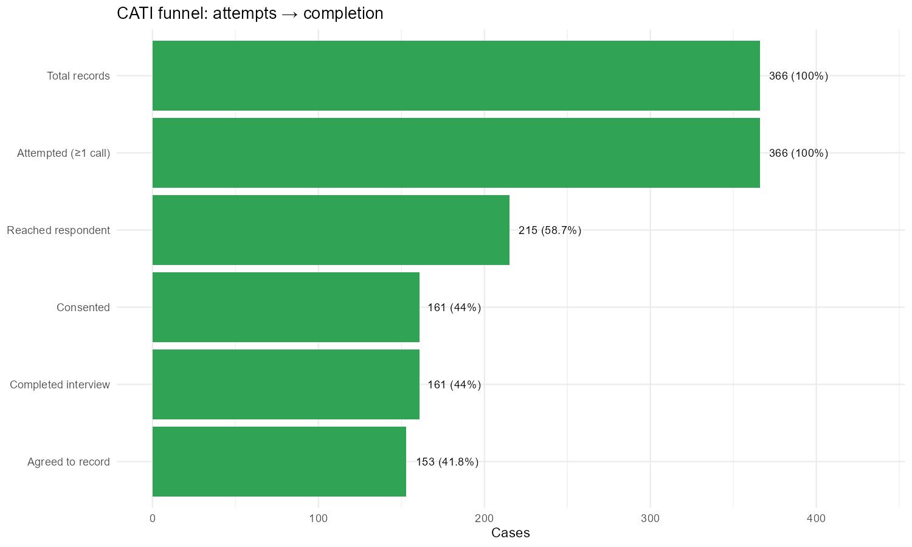
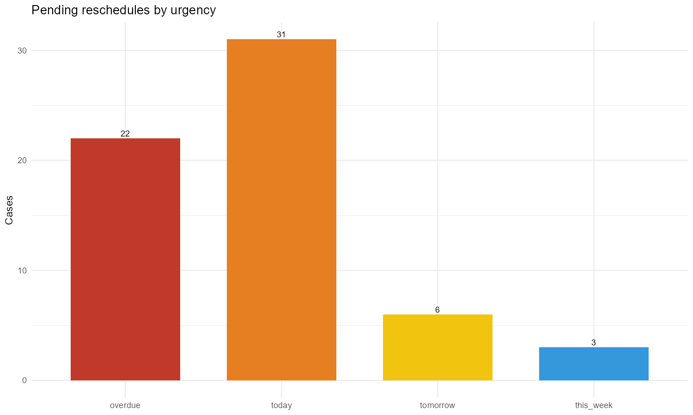
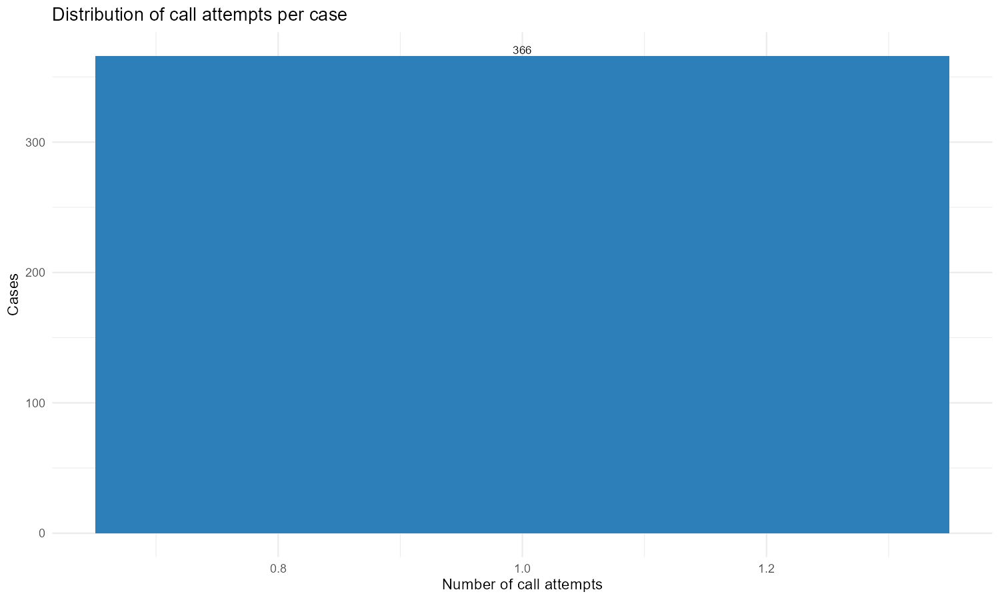
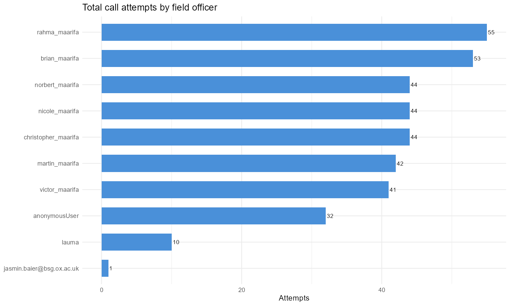
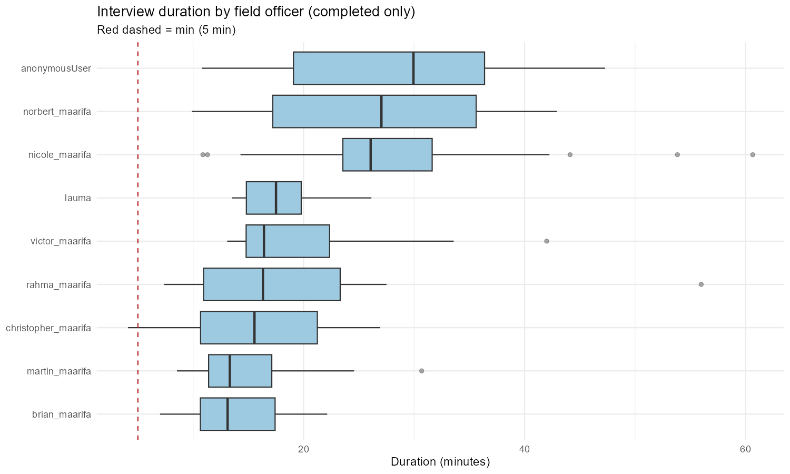
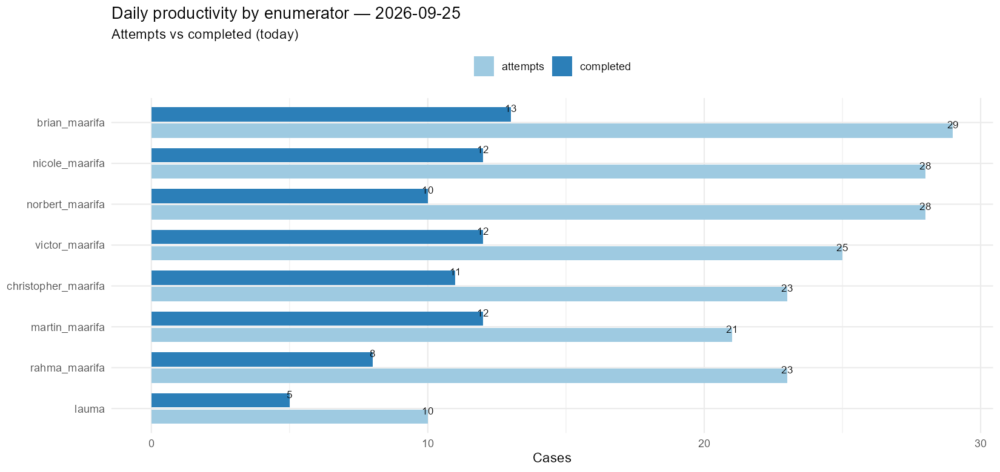
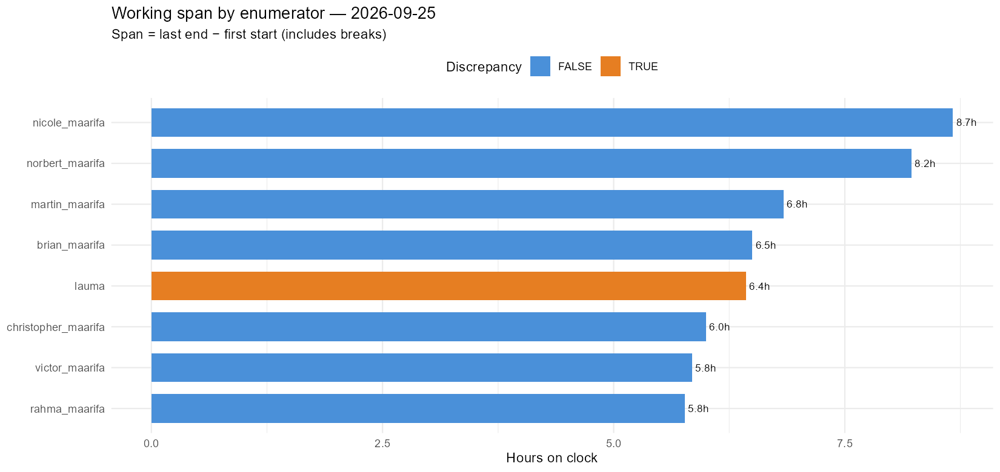
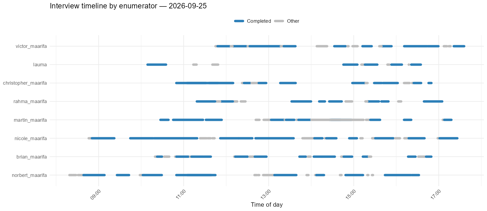
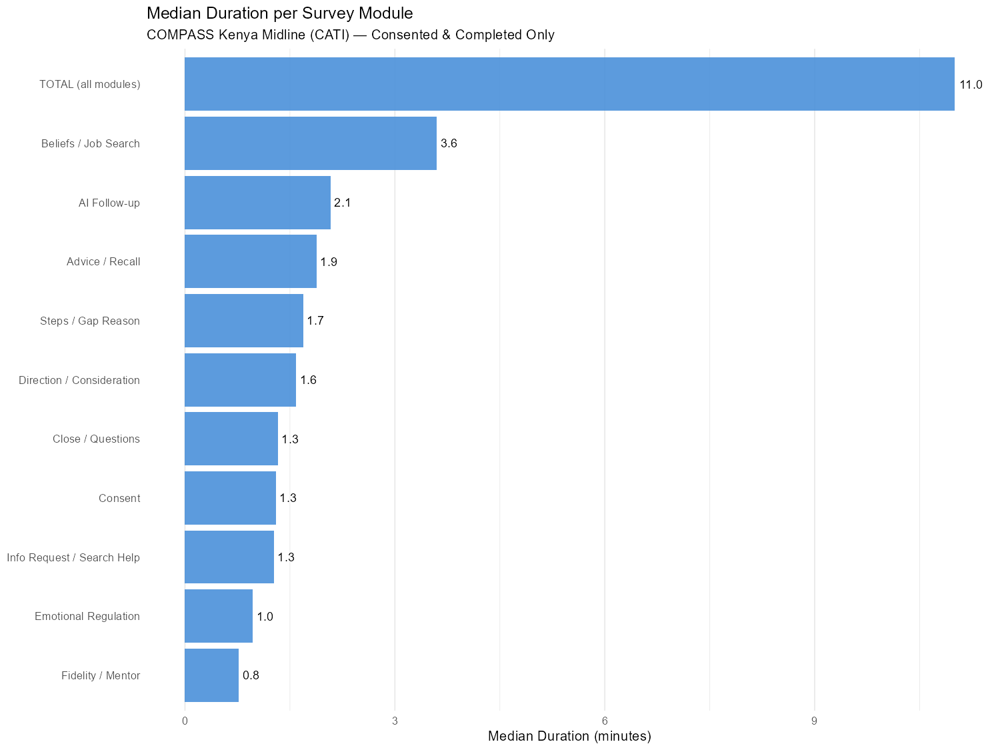
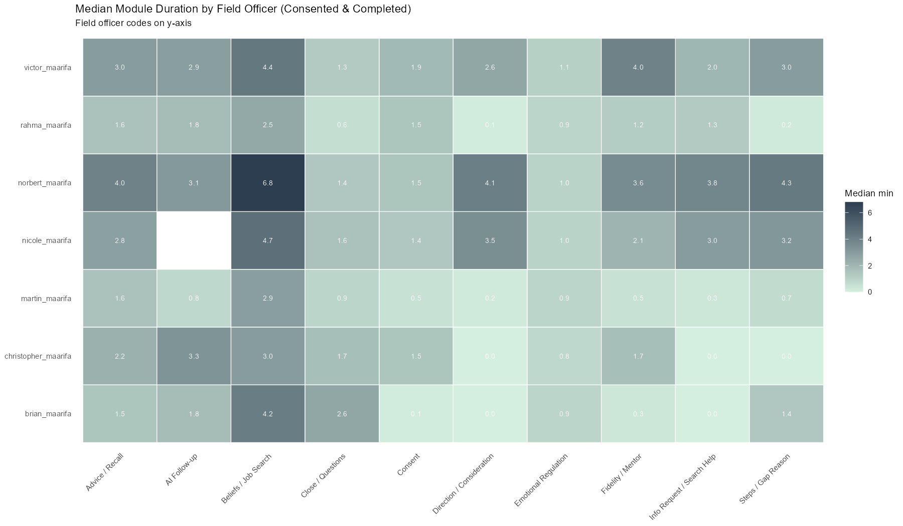
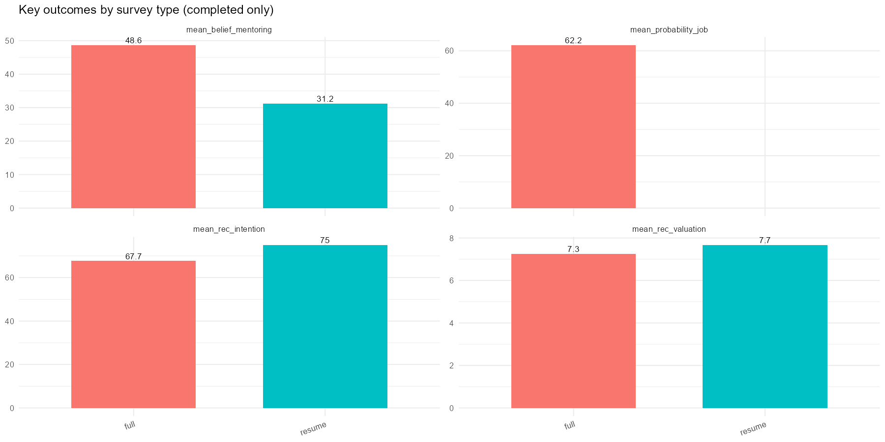
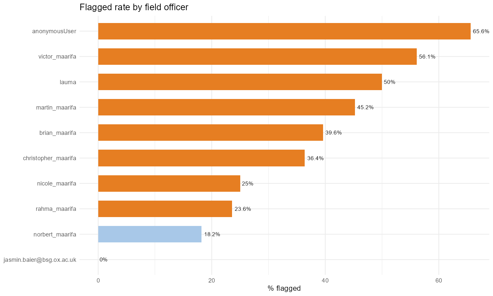
================================================================
COMPASS KENYA MIDLINE HFC v1.5 (CATI) — 2026-09-25 17:44
Filter date: 2026-01-01 | Exclude FO: none
================================================================
[LOAD] Compass Kenya Youth Midline_WIDE.csv
[LOAD] Rows: 366 Cols: 370
[ID] Using: caseid > instanceID
[DATE] start OK: 366/366 | date OK: 366/366
After date filter (>2026-01-01): 366 (removed 0)
[GATE] Completed: 161 | Rescheduled/open: 181 | Refused: 0 | Wrong#: 4 | Total: 366
[DUR] Module duration columns converted: 0 of 10
=== SURVEY TYPE ===
Saved: midline_HFC_outputs/HFC_survey_type_distribution_2026-09-25.csv
Types: full (205) | top_up (139) | resume (19) | Unknown (3)
=== CATI CALL / CONSENT / RESCHEDULE TRACKING ===
6a. Call attempt funnel
Attempt-source candidates: numeric_summary = 333 | attempt_status_count = 366 | attempt_time_count = 366 -> using: attempt_N_status count
Attempts | max=1 | cases with >=1 attempt: 366
Saved: midline_HFC_outputs/HFC_call_funnel_2026-09-25.csv
Funnel: Total records=366 > Attempted (≥1 call)=366 > Reached respondent=215 > Consented=161 > Agreed to record=153 > Completed interview=161
Saved: midline_HFC_outputs/HFC_call_attempts_distribution_2026-09-25.csv
6b. Consent / recording audit
Saved: midline_HFC_outputs/HFC_consent_audit_by_enumerator_2026-09-25.csv
Completed surveys w/o consent: 1
Saved: midline_HFC_outputs/HFC_consent_recording_missing_drilldown_2026-09-25.csv
Drill-down saved: 8 completed surveys missing consent/recording.
Completed, consent=No, content present: 0
6b-ii. Audio Audit Consent Tracker
Saved: midline_HFC_outputs/HFC_audio_audit_consent_2026-09-25.csv
Audio audit records exported: 161
6c. Reschedule & callback tracker
Reschedule diagnostic (first raw -> parsed pairs):
[Rescheduled] raw='2026-09-23 11-00' -> parsed='2026-09-23 11:00:00'
[Rescheduled] raw='2026-09-23 10-00' -> parsed='2026-09-23 10:00:00'
[Rescheduled] raw='2026-09-23 14-00' -> parsed='2026-09-23 14:00:00'
Overdue reschedules: 21
Saved: midline_HFC_outputs/HFC_reschedule_tracker_2026-09-25.csv
Saved: midline_HFC_outputs/HFC_reschedule_urgency_2026-09-25.csv
Reschedule urgency: today=31 | overdue=22 | tomorrow=6 | this_week=3
Saved: midline_HFC_outputs/HFC_sms_summary_2026-09-25.csv
Saved: midline_HFC_outputs/HFC_final_status_distribution_2026-09-25.csv
Saved: midline_HFC_outputs/HFC_labelled_categorical_2026-09-25.csv
Labelled categoricals: 37 rows
=== MODULE DURATION ANALYSIS ===
[WARN] No module duration columns present in data.
=== DAILY PRODUCTIVITY & WORK HOURS ===
Reference day: 2026-09-25 (today)
Records on reference day: 187
Saved: midline_HFC_outputs/HFC_daily_productivity_today_vs_prev_2026-09-25.csv
Saved today vs previous day submissions comparison.
Saved: midline_HFC_outputs/HFC_daily_productivity_2026-09-25.csv
FOs active on 2026-09-25: 8
Discrepancies flagged: 1
Saved: midline_HFC_outputs/HFC_daily_fo_timeline_raw_2026-09-25.csv
Saved: midline_HFC_outputs/HFC_daily_timeline_summary_2026-09-25.csv
Saved: midline_HFC_outputs/HFC_fo_overlapping_interviews_2026-09-25.csv
Overlapping interviews found: 4
Plot saved: midline_HFC_outputs/plot_daily_productivity_2026-09-25.png
Plot saved: midline_HFC_outputs/plot_daily_hours_2026-09-25.png
Plot saved: midline_HFC_outputs/plot_daily_timeline_2026-09-25.png
=== DATA QUALITY ===
Saved: midline_HFC_outputs/HFC_duplicate_report_2026-09-25.csv
7a. Duplicate COMPLETED IDs flagged: 6 (2 unique IDs)
7b. Critical missing in completed: 1
7d. Short completed surveys: 1
7e. Incomplete completed surveys: 81
7f. Outlier candidates: 41
Saved: midline_HFC_outputs/HFC_outlier_fences_2026-09-25.csv
=== ENUMERATOR PERFORMANCE ===
Saved: midline_HFC_outputs/HFC_dk_rates_by_enumerator_2026-09-25.csv
Saved: midline_HFC_outputs/HFC_enumerator_summary_2026-09-25.csv
=== COMBINED FO PERFORMANCE & DAILY DELTA ===
Saved: midline_HFC_outputs/HFC_fo_combined_performance_delta_2026-09-25.csv
Saved combined FO performance with daily delta (excluded from dashboard).
=== SURVEY-TYPE COMPARISONS ===
Saved: midline_HFC_outputs/HFC_surveytype_numeric_comparison_2026-09-25.csv
Saved: midline_HFC_outputs/HFC_surveytype_categorical_comparison_2026-09-25.csv
Saved: midline_HFC_outputs/HFC_flagged_surveys_2026-09-25.csv
Flagged surveys: 137 (37.4%)
=== BASELINE OPERATOR LOOKUP ===
[BASELINE] File path confirmed: C:/Users/noob/Documents/Maarifa/Code/compass_kenya_youth_baseline_WIDE.csv
[BASELINE] Loading: C:/Users/noob/Documents/Maarifa/Code/compass_kenya_youth_baseline_WIDE.csv
[BASELINE] Rows: 4350 | Cols: 529
[BASELINE] No valid phone→operator entries found.
=== VOUCHER CSV ===
[WARN] Completed rows with no valid phone: 3
[WARN] Completed rows with missing preload_incentive_kes: 3
Saved: midline_HFC_outputs/HFC_voucher_unpayable_2026-09-25.csv
Unpayable rows written: 3
[VOUCHER] midline_HFC_outputs/voucher_completed.csv (rows: 158)
[VOUCHER] Distinct values: Ksh30, Ksh40, Ksh50
Saved: midline_HFC_outputs/HFC_voucher_audit_2026-09-25.csv
Saved: midline_HFC_outputs/HFC_voucher_operator_summary_2026-09-25.csv
Operator provenance: Unresolved=158
[WARN] Vouchers with no resolvable operator: 158
=== PLOTS ===
Plot saved: midline_HFC_outputs/plot_attempts_by_fo_2026-09-25.png
Plot saved: midline_HFC_outputs/plot_duration_by_fo_2026-09-25.png
Plot saved: midline_HFC_outputs/plot_call_attempts_distribution_2026-09-25.png
Plot saved: midline_HFC_outputs/plot_cati_funnel_2026-09-25.png
Plot saved: midline_HFC_outputs/plot_reschedule_urgency_2026-09-25.png
Plot saved: midline_HFC_outputs/plot_surveytype_outcomes_2026-09-25.png
Plot saved: midline_HFC_outputs/plot_flag_rate_by_fo_2026-09-25.png
=== HTML DASHBOARD ===